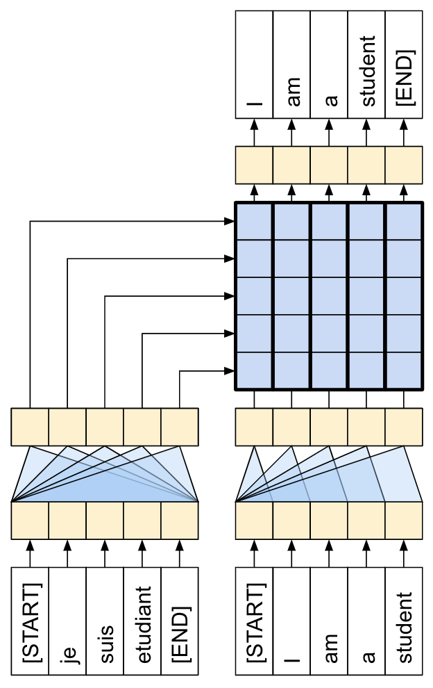

7.4 Transformer 翻译模型
使用 Transformer 和 Keras 进行神经机器翻译！
创建日期: 2025-04-15
本教程演示如何创建和训练 序列到序列 (Seq2Seq) 的 Transformer 模型，它将葡萄牙语翻译成英语。Transformer 最初在论文 Attention is all you need 中提出，可以查看《深度学习综合指南》第 9.4 节 Transformer 论文 的内容。
Transformer 是一种深度神经网络，它利用 自注意力机制 (Self-attention) 取代了 CNN 和 RNN 。自注意力机制让 Transformer 能够轻松地在输入序列之间传递信息。
正如 Google AI 博客文章 中所解释的那样：
机器翻译的神经网络通常包含一个编码器，用于读取输入句子并生成其表示。然后，解码器参考编码器生成的表示，逐字生成输出句子。Transformer 首先为每个单词生成初始表示或嵌入...然后它使用自注意力机制聚合来自所有其它单词的信息，根据整个上下文为每个单词生成一个新的表示，由下图填充的球表示。这个过程对所有单词并行重复多次，依次生成新的表示：

需要消化的内容很多，本教程的目标是将其分解为易于理解的部分。在本教程中，我们将：
-
准备数据；
-
实现必要的组件：
- 位置嵌入；
- 注意力层；
- 编码器和解码器。
-
构建和训练 Transformer ；
-
生成翻译；
-
导出模型。
为了充分利用本教程，如果您了解 第 7.2 节 文本生成 和 注意力机制 的知识，这将很有帮助。
Transformer 是一种序列到序列的编码器-解码器模型，类似于 第 7.3 节 Seq2Seq 翻译模型 中的模型。单层 Transformer 需要编写更多代码，但与编码器-解码器 RNN 模型几乎相同，如下图所示展示带有注意力的 RNN 模型：

唯一的区别是 RNN 层被替换为自注意力层。本教程构建了一个 4 层 Transformer，它更强大，但从根本上来说并不更复杂。如下图展示单层 Transformer 模型：
训练完模型后，我们可以输入葡萄牙语句子并返回英语翻译。可以看到生成的可视化注意力权重：
7.4.1 为何如此重要
-
Transformer 擅长对序列数据（例如自然语言）进行建模。
-
与循环神经网络 (RNN) 不同，Transformer 是可并行化的。这使得他们在 GPU 和 TPU 等硬件上非常高效。主要原因是 Transformer 用注意力机制取代了循环，计算可以并行，而不像 RNN 那样串联计算。
-
与 RNN（如 Seq2Seq）或卷积神经网络 (CNN) 不同，Transformer 能够捕获输入或输出序列中远距离位置之间的上下文和依赖。因此，长连接可以被学习。在每一层中注意力机制允许每个位置访问整个输入，而 RNN 或者 CNN ，信息需要经过许多处理步骤才能移动很长距离，这使得学习变得困难。
-
Transformer 不对数据中的时空关系做任何假设，这对于处理一组对象非常理想。
下图展示在英语到法语上训练的Transformer 的第 5 层和第 6 层，单词 "it" 的编码器自注意力分布（八个注意力头之一）：
7.4.2 设置
需要安装 TensorFlow Datasets 下载数据集，和 TensroFlow Text 进行文本预处理，导入必要的模块：
from matplotlib import pyplot
import tensorflow as tf
import tensorflow_text
import tensorflow_datasets as tfds
import keras
import numpy7.4.3 数据处理
下载数据集和字词标记器，将它们生成一个 tf.data.Dataset 结构体。
7.4.3.1 下载数据集
使用 TensorFlow Datasets 加载 葡萄牙语-英语翻译数据集，这个数据集包含接近 52000 个训练，1200 验证和 1800 个测试样本：
examples, metadata = tfds.load('ted_hrlr_translate/pt_to_en',
with_info=True,
as_supervised=True)
train_examples, val_examples = examples['train'], examples['validation']TensorFlow Datasets 返回 tf.data.Dataset 对象，它可以产生成对的文本示例 (葡萄牙语-英语) ：
for pt_examples, en_examples in train_examples.batch(3).take(1):
print('> Examples in Portuguese:')
for pt in pt_examples.numpy():
print(pt.decode('utf-8'))
print('> Examples in English:')
for en in en_examples.numpy():
print(en.decode('utf-8'))> Examples in Portuguese: e quando melhoramos a procura , tiramos a única vantagem da impressão , que é a serendipidade . mas e se estes fatores fossem ativos ? mas eles não tinham a curiosidade de me testar . > Examples in English: and when you improve searchability , you actually take away the one advantage of print , which is serendipity . but what if it were active ? but they did n't test for curiosity .
7.4.3.2 设置标记器
我们已经加载了数据集，接下来需要将文本 标记 (Tokenize) ，这样每个元素可以使用 标记 (Token) 或者标记 ID（数字）表示。
标记化是一个将文本分解成标记的过程。取决于标记器，这些标记可以表示句子片段、单词、子单词或者字符。要了解更多标记器的知识，可以访问 Tokenizing with TF Text 文档。
本教程使用的是 Subword tokenizers 中的内置标记器。它优化了两个 text.BertTokenizer 对象（一个是英语，一个是葡萄牙语），使用 TensorFlow 的 save_model 格式导出。
与 原始论文 5.1 小节 不同，它们对源句子和目标句子使用单 字节对 (Byte-pair) 标记器，总词汇量为 37000 。
下载、解压、导入 save_model 格式：
model_name = 'ted_hrlr_translate_pt_en_converter'
keras.utils.get_file(
f'{model_name}.zip',
f'https://storage.googleapis.com/download.tensorflow.org/models/{model_name}.zip',
cache_dir='.', cache_subdir='', extract=True)
tokenizers = tf.saved_model.load('ted_hrlr_translate_pt_en_converter_extracted/' + model_name)tf.saved_model 包含两个文本标记器，一个是英语，一个是葡萄牙语，它们都有相同的方法。
tokenize 方法将一批字符串转换为填充的标记 ID ，此方法在标记之前拆分标点符号、小写字母并对输入进行 Unicode 规范化。该标准化在此处不可见，因为输入数据已经标准化：
print('> This is a batch of strings:')
for en in en_examples.numpy():
print(en.decode('utf-8'))encoded = tokenizers.en.tokenize(en_examples)
print('> This is a padded-batch of token IDs:')
for row in encoded.to_list():
print(row)> This is a padded-batch of token IDs: [2, 72, 117, 79, 1259, 1491, 2362, 13, 79, 150, 184, 311, 71, 103, 2308, 74, 2679, 13, 148, 80, 55, 4840, 1434, 2423, 540, 15, 3] [2, 87, 90, 107, 76, 129, 1852, 30, 3] [2, 87, 83, 149, 50, 9, 56, 664, 85, 2512, 15, 3]
detokenize 方法尝试将这些标记 ID 转换回人类可读的文本：
round_trip = tokenizers.en.detokenize(encoded)
print('> This is human-readable text:')
for line in round_trip.numpy():
print(line.decode('utf-8'))底层 lookup 方法将标记 ID 转换为标记文本：
print('> This is the text split into tokens:')
tokens = tokenizers.en.lookup(encoded)
print(tokens)输出展示了 子词 (Subword) 标记器可以对单子进行分割：
> This is the text split into tokens:
<tf.RaggedTensor [[b'[START]', b'and', b'when', b'you', b'improve', b'search', b'##ability',
b',', b'you', b'actually', b'take', b'away', b'the', b'one', b'advantage',
b'of', b'print', b',', b'which', b'is', b's', b'##ere', b'##nd', b'##ip',
b'##ity', b'.', b'[END]'] ,
[b'[START]', b'but', b'what', b'if', b'it', b'were', b'active', b'?',
b'[END]'] ,
[b'[START]', b'but', b'they', b'did', b'n', b"'", b't', b'test', b'for',
b'curiosity', b'.', b'[END]'] ]>
比如单词 searchability 分解成为 search 和 ##ability ，单词 serendipity 分解成 s , ##ere , ##nd , ##ip 和 ##ity 。
需要注意的是标记的文本包含 [START] 和 [END] 两个标记。
7.4.3.3 使用 tf.data
7.4.4 测试数据集
7.4.5 定义组件
Transformer 内部有很多事情要做。需要记住的重要事项是：
-
它遵循与带有编码器和解码器的标准序列到序列模型相同的一般模式；
-
如果我们一步一步地努力，一切都会变得有意义。

随着学习本教程的进度，我们将解释这两个图中的每个组件。下图是 4 层的 Transformer 表示：
7.4.5.1 嵌入和位置编码
编码器和解码器的输入使用相同的嵌入和位置编码逻辑。
给定一个标记序列，输入标记（葡萄牙语）和目标标记（英语）都必须使用一个层转换为 keras.layers.Embedding 向量。
整个模型中使用的注意力层将其输入市委一组无序的向量。由于模型不包含任何循环层或者卷积层。它需要某种方法来识别词序，否则它会将输入序列市委一个词语背包，例如 how are you 等它是无法区分 how you are 和 you how are 的，
Transformer 为嵌入向量添加了位置编码。它使用一组不同频率的正弦和余弦（跨序列）。根据定义，附近的元素将具有相似的位置编码。
原始论文采用以下公式来计算位置编码：
位置编码函数是一堆正弦和余弦，它们根据沿嵌入向量深度的位置以不同的频率振动，
7.4.5.2 添加并规范化
7.4.5.3 基础注意力层
整个模型都使用了注意力层，除了注意力的配置方式外，这些层都是相同的。每个层都包含一个 layers.MultiHeadAttention 、一个 layers.LayerNormalization 和一个 layers.Add 。
要实现这些注意层，请从仅包含组件层的简单基类开始。每个用例都将作为子类实现。这样编写的代码会多一点，但意图却很明确。